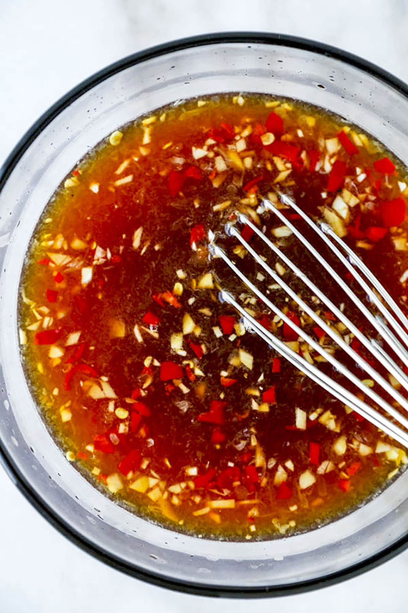

Banh Xeo/h1>

Description
Nuoc cham is the quintessential Vietnamese dipping sauce. It is used in a variety of Vietnamese dishes in many applications. Every family has their own variation of this sauce, and this is my family’s recipe! Included in this recipe are instructions on how to make different variations of this sauce and substitutions for ingredients.
Ingredients
- 6 tbsp water
- 2 tbsp sugar
- 1.5 tbsp freshly squeezed lime or lemon juice
- 2 tbsp fish sauce
- 2 clove garlic minced
- 1 bird's eye / Thai chilli finely sliced
Steps
- Combine water and sugar in a bowl. Optional: heat 1/3 of the water, then mix in to make dissolving the sugar easier, then add the rest of the water.
- Add lime or lemon juice in increments until you like how it tastes. A good guide is it should taste like lemonade/limeade.
- Add fish sauce in small increments until you like how it tastes. It should be a little strong since it will be paired with unseasoned food.
- Top with garlic and chilies then serve.